In this lab you will develop several different types of groups and investigate table design.
You can create drill down or cyclic field groups to be used as dimensions. A list shows all groups in the document. An icon to the left of each group name indicates whether it is a drill down group or a cyclic group. You can select a group by clicking in the list. The selected groups are shown in the Used Fields area.
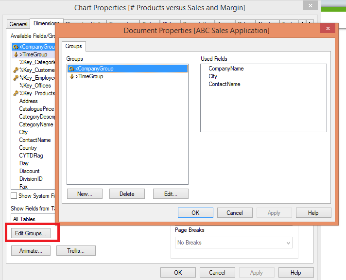
When several fields form a natural hierarchy, it makes sense to create a drill-down group. Typical examples of hierarchic groups are:
When you use a drill-down group as a dimension in a chart, the chart uses the first field in the group's list of fields that has more than one possible value. If you make selections that cause the field to have only one possible value, the next field in the list is used instead, provided that it has more than one possible value. If no field in the list has more than one possible value, the last field is used anyway.
For example Year is used as the chart dimension until a single year is selected. The chart would then show the Quarter's for that year, if a single quarter is selected the chart switches to Month.
As selections disappear so that more than one field becomes available in the upper fields of the group's field list, the chart is automatically drilled back up. You can force a drill up by clicking on the drill-up icon in the chart.
Sometimes you may find it useful to group fields that do not form a natural hierarchy. You then enable the user to make quick changes to the data to be displayed in the chart or list box.
You can group any fields together in a cyclic group. When a cyclic group is used as a chart dimension, the chart initially uses the first field in the list. You may then switch to another field by clicking the cycle icon in the chart. The fields are displayed in teh order in which they appear in the group's field list. When the last field in the list has been used, the turn goes back to the first field again. In this way the chart may cycle through the field indefinitely.
As a designer, you are often challenged by the limited screen area. Imagine having two different user types in your audience. One group, prefers visual charts and the other absolutely wants to see numbers, preferably in a table. you don't need to create two separate objects in order to serve both user types.
The type of chart can be changed by user without going to the chart properties dialog, provided that the fast type change option has been selected on the general tab of the properties.
An icon showing the next available chart type displays in the chart. When you left click the icon, the chart changes to the indicated type. When you right click the icon, you see a drow down menu with all the available types.
You can choose the position of the fast type change icon. If you choose Caption, the icon displays in the chart caption, provided your caption is shown. If you choose In Chart, the icon displays inside the chart, provided that the chart is not a pivot table or straight table.
On the Dashboard sheet you want to show the Sales Trend as a table.
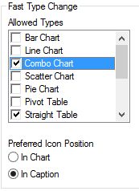
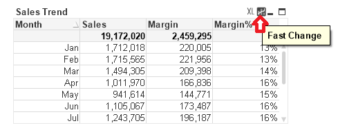
Naming conventions:
<>Create a drill down for the Order Trend chart on the dashboard sheet. It should contain the fields Year, Quarter, and Month. Remove the Month dimension and use the new group dimension.
>TimeGroup.>TimeGroup, and click add. click Ok.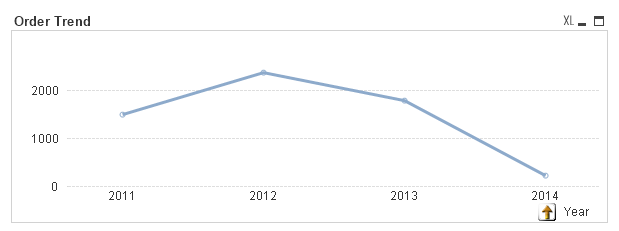
The pie chart that represents Sales by Division, you now want to allow the user to view that pie chart for not only Sales but also Margin and number of orders. This requires writing two new expressions and group the three together.
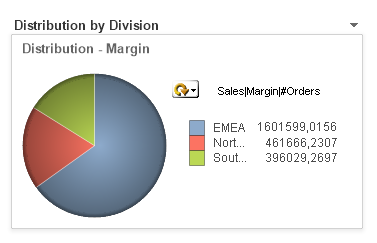
The container object server as a container for sheet objects. Small tabs or a drop down list enable the user to choose which object to show. The container object can thus be used instead of the more traditional Fast Type Change to toggle between object types. Also, the container object has the additional advantage that the objects in the container can use different dimensions an dexpressions.
You can group objects in a container by function, context or both. Container objects give QlikView document designers a way to present multiple perspectives on a set of facts in a single space saving, easy to use object. Containers simplify the presentation and enhance the analysis of any set of document objects.
You build containers by selecting from the list of available document objects. User sequence the list and also indicate their preference for object selection. Before you can place objects in a container, you have to first create them.
There are two container types: Grid and Single Object. Grid allows you to place multiple objects in columns and rows. Single object allows you to display one object at a time.
There is not enough screen area to show all obects side by side on the sales person details sheet. You want to show the sales trend and order trend charts on the sales person details sheet.
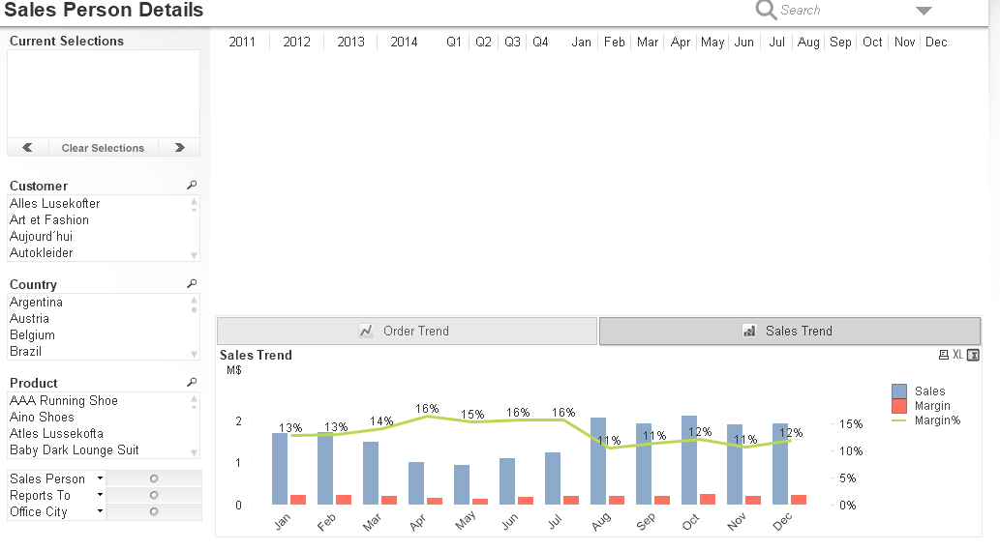
You want to add a new chart that does not exist in the layout to the container.
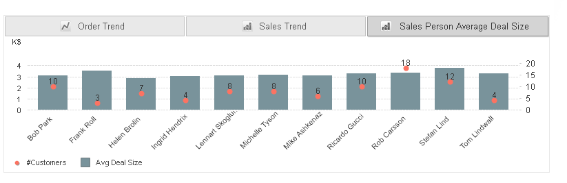
Objectives: Learn when to use a table, explain how to select and sort values in tables, define the difference between a straight table, pivot table, and a table box. Explain how to enhance a table with mini charts and visual cues.
A table box is a combination of list boxes. Insteade of placing each field in its own object sepearately, the table box combines them. the content of every row is logically connected. The columns may be fretched from different input tables, letting the user create tables from any possible combination of input tables. So when you want to present the conttents of several list boxes in one table, you need a table box.
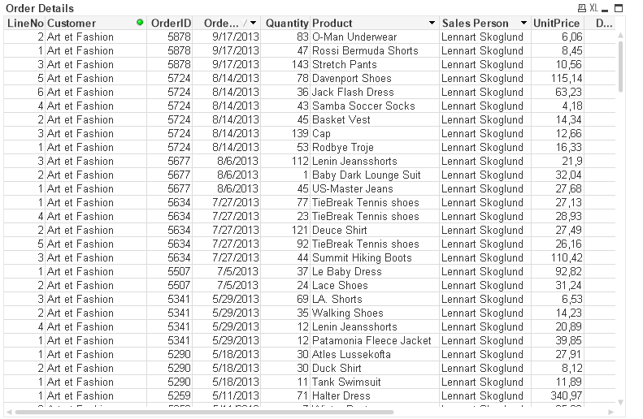
With QlikView's associative logic, the contents of the table box are automatically updated when you make selections in other objects. As in a box, cells that you select in a table box turn green when you select them, but when you release the mouse button, they revert to their original colour. The size of the table is adjusted to display only the reulst of your selection. Selections in a column are indicated with a beacon to the right of the field name.
There are two different methods of sorting in table boxes. First of al, you can set the order in which the columns are displayed, from left to right. You do this by clicking the title row of a column and dragging it to a new position. A blue outline of the field indicates that you are performing a drag and drop operation. The order can also be set in the Table box Properties>General dialog by means of the Promote and Demote buttons.
Secondly the rows in the table box can be sorted according to the sort order for the values of specific fields in the table box. This is done in the dialog Table Box Properties>Sort. there you can also set a sort priority by moving fields up or down in the list. The sort priority is independent from the order in which the columns are displayed.
An alternative and convenient way is to simply right click the column of the field you wish to sort on and select the Sort command from the table box menu. Double clicking the column header works equally well. Repeated use of this toggles the sort order for the selected field betwen ascending and descending order. A small arrow icon at the top of the column indicates for which field the table is sorted and if the sort order is ascending or descending.
The Table Box Properties>Presentation tab contains the options for text alignments in the columns. You can separately determine the alignment of text and numbers. Select one of the fields and make the necessary adjustments under alignment. It is a design best practice to choose the same alignment fo rthe column label and text and numbers.
The pivot table is one of the most powerful tools for analysing data. It offers substantial functionality but is still easy to use. Pivot tables show dimensions and expressions in rows and columns, for examples, in cross tables.
in opposition to the pivot table, the straight table cannot display subtotals or serve as a cross table. However, any of its columns can be sorted and each of its rows contains one combination of dimensions plus expressions. A straight table is often used with one dimension. Having the dimension as a cyclic or drill down group offers more flexibility in looking at the same metrics.
Graphs show more than numbers, but numbers show the exact actual figures. With mini charts, there is no need to pick one or the other. Minit Charts have a high information density; they enable you to show much information in a very limited space. There are various representaiton modes for mini charts. use lines to show the movements, bars to show the quanitiative values, and whiskers to show the win/loss values. When you use mini charts, you can add valuable context to your tables because they do not display only actual figures but individual historical measurements and seeing facts in a historical context leads to better decisions.
You need to provide a chart that shows a detailed view of the customers' Sales, Margin, Quantity, the date of the latest order, and the average discount they received. The users need to see the actual numbers, but also a fast and accurate overview of order trends and anumber of orders. They need to rank and sort the data.
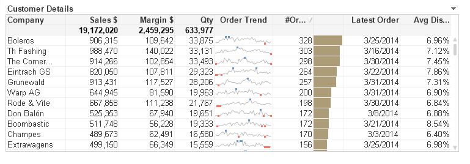
The CMO needs to anlayse product performance on product level by year, quarter or division. Here you have many dimensions but only two measures, sales and margin.
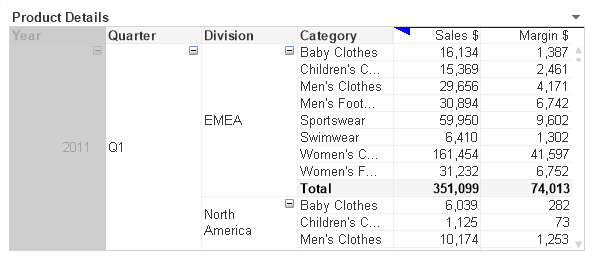
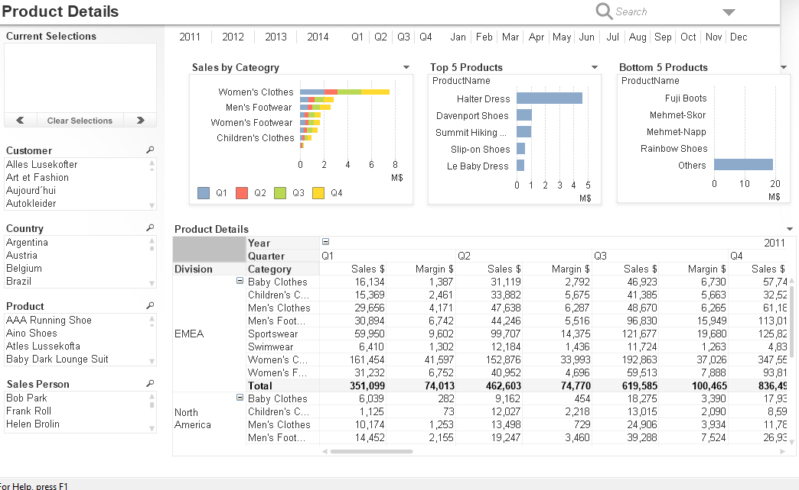